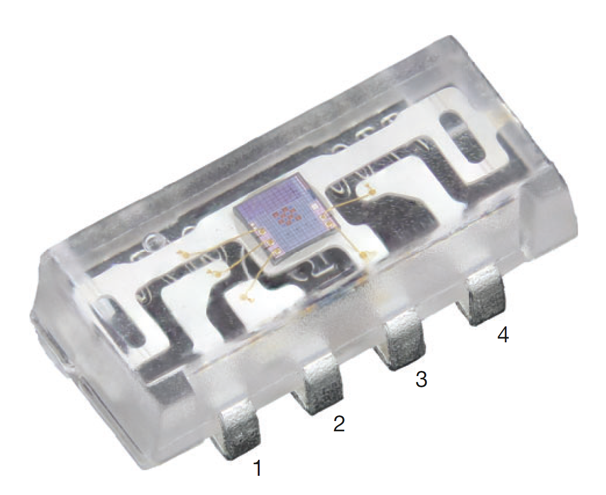
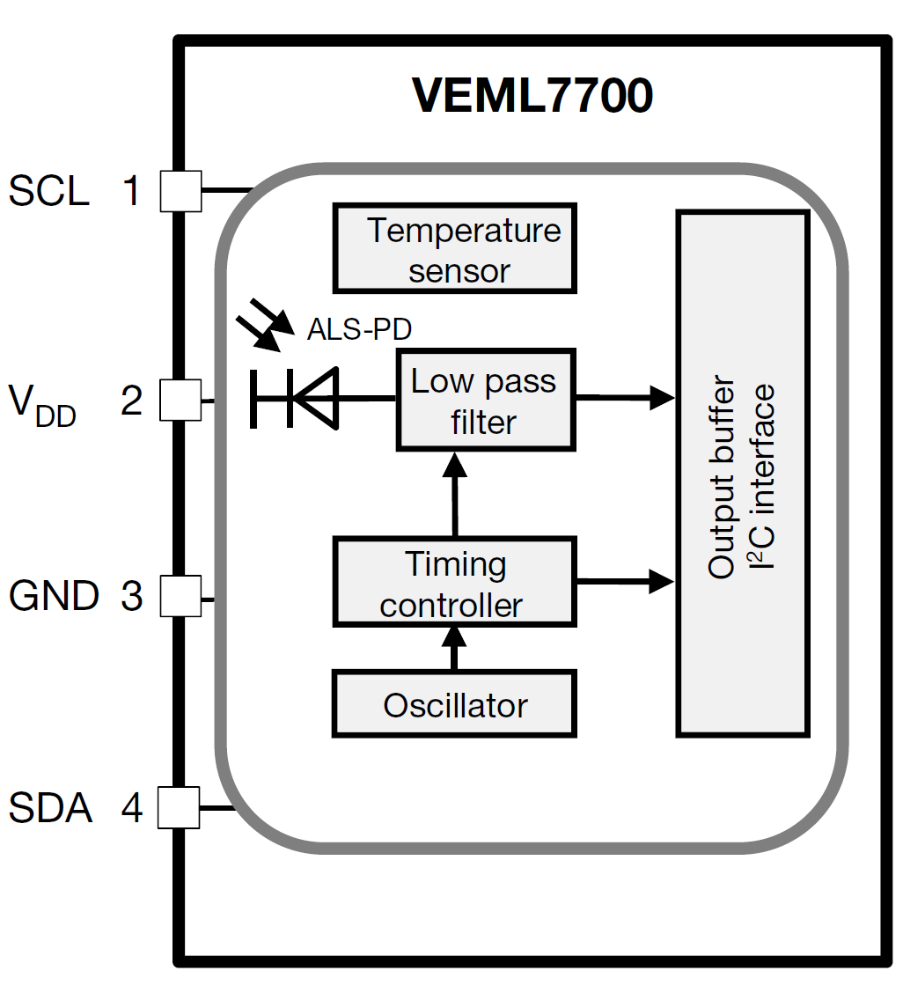
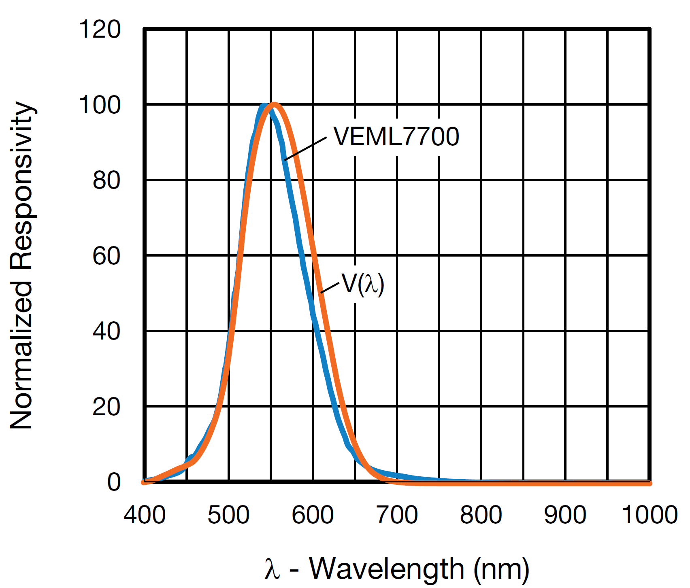
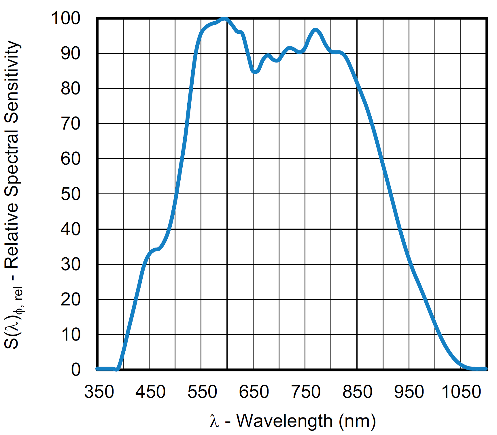

VEML7700
The VEML7700 high accuracy 16-bit light sensor can be used to precisely measure ambient light. Below is a functional block diagram of the device, where the sensor is an ALS photodiode.
Specifications
Parameter |
Typical Value |
Units |
|---|---|---|
Digital resolution |
0.0036 |
lux/bit |
Detectable minimum illuminance |
0.0072 |
lux |
Detectable maximum illuminance |
120,000 |
lux |
Dark offset |
3 |
steps |
Below is a graph showing the spectral response of the sensor. It is sensitive to wavelengths ranging from 450nm - 650nm, normalized at 550nm.
Additionally, below is a graph showing the sensitivity of the white light channel on the sensor.
